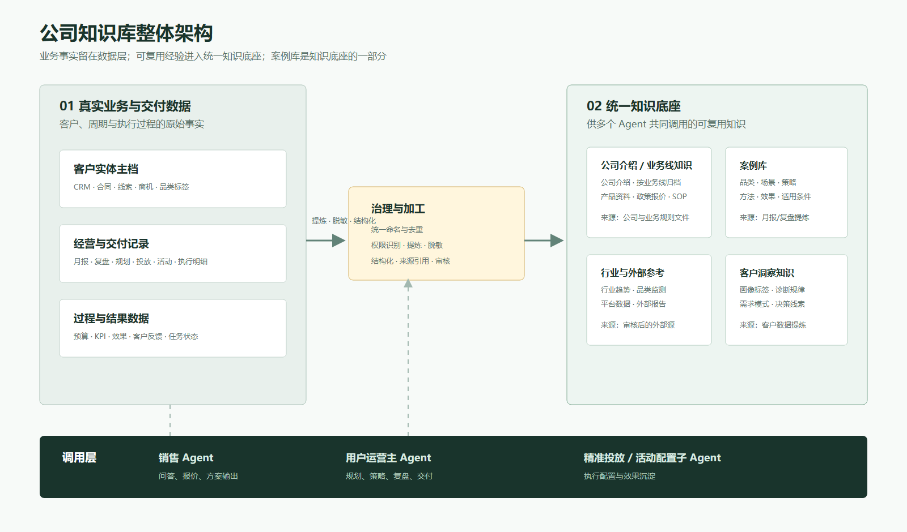
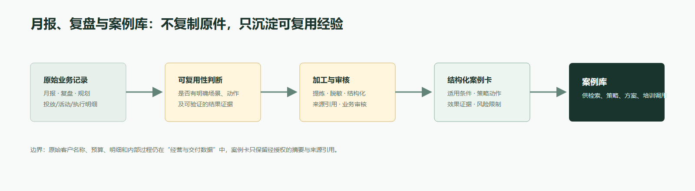

月报、复盘、预算与执行明细留在业务数据层。案例库仅保存已脱敏、结构化的经验与来源引用。
核心判断
真实业务与交付数据保留客户事实与执行过程；统一知识底座沉淀可复用知识。案例库是知识底座的一部分，不与知识库并列。
架构总览
数据事实与知识资产分层，经过治理后供多个 Agent 调用。

月报、复盘与案例库的边界
保留原始业务事实，同时形成可检索、可复用的经验资产。

三条治理规则
产品资料按业务线归档；客户资料按客户实体归档。品类作为客户的标签/索引，避免同一客户跨品类时重复上传。
先汇总产品资料、案例材料和行业动态，再按统一口径归类；不能按上传人或历史文件夹随意拆分。
一手上传目录结构
以“原始数据留原层、可复用知识进入知识层”为原则，供首轮资料归档使用。
公司知识资产库/ ├─ 00_治理与规范/ # 不上传业务原件 │ ├─ 01_目录与命名规范/ │ ├─ 02_权限与脱敏规则/ │ └─ 03_案例卡模板与审核记录/ ├─ 01_真实业务与交付数据/ # 原始事实，受权限控制 │ ├─ 01_客户实体主档/ # 按客户实体归档，品类为标签 │ │ └─ 客户主体_【客户名称】/ │ │ ├─ 01_基础档案与CRM信息/ │ │ ├─ 02_合同与合作关系/ │ │ ├─ 03_店铺与品类标签/ │ │ └─ 04_商机与服务关系/ │ └─ 02_经营与交付记录/ │ ├─ 月报与经营复盘/ │ ├─ 规划与策略方案/ │ ├─ 精准投放数据/ │ ├─ 活动配置与执行数据/ │ └─ 客户反馈与任务记录/ ├─ 02_统一知识底座/ # Agent 可检索的知识资产 │ ├─ 01_公司介绍/ # 公司级通用资料 │ │ └─ 公司介绍资料/ │ ├─ 02_业务线/ # 先选业务线，再放业务与产品资料 │ │ └─ 业务线_【正式名称待确认】/ │ │ ├─ 01_业务线介绍/ │ │ ├─ 02_产品资料与产品PPT/ │ │ ├─ 03_政策_报价与标准定价/ │ │ └─ 04_SOP与交付规范/ │ ├─ 03_案例库/ │ │ ├─ 01_品类案例/ │ │ ├─ 02_业务场景案例/ │ │ ├─ 03_策略与方法案例/ │ │ └─ 04_效果复盘与经验沉淀/ │ ├─ 04_行业与外部参考/ │ │ ├─ 行业趋势与行业大盘/ │ │ ├─ 品类监测与平台数据/ │ │ └─ 行业动态与外部报告/ │ └─ 05_客户洞察知识/ │ ├─ 可复用画像标签/ │ ├─ 客户诊断规律/ │ └─ 需求模式与决策线索/ └─ 99_待治理资料/ # 来源不清、重复或待判断的材料暂存 ├─ 待去重/ ├─ 待补来源/ ├─ 待业务确认/ └─ 待脱敏与审核/
| 目录 | 一手上传内容 | 禁止直接上传 |
|---|---|---|
01_真实业务与交付数据 | 原始月报、复盘、合同、规划表、投放/活动明细 | 已被脱敏提炼的案例卡副本 |
02_统一知识底座/01_公司介绍 | 公司级介绍、公司能力与通用资料 | 仅适用于单一业务线的产品或报价资料 |
02_统一知识底座/02_业务线 | 按业务线归档的介绍、产品、政策报价与 SOP | 跨业务线通用的公司介绍资料 |
02_统一知识底座/03_案例库 | 审核通过的结构化案例卡及其来源引用 | 整份月报、整份复盘、客户敏感明细 |
99_待治理资料 | 重复、来源待补、归属待确认的材料 | 已明确归属的正式资料 |
首轮上传顺序
先按业务线上传产品资料、报价、政策与 SOP；客户资料则按客户实体建立主档，并在“店铺与品类标签”中维护品类。对“客户档案/客户数据库”等同义目录，先统一命名并去重后再归档。